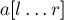
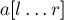
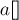
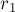
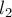
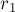
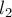
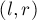
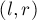

MAXimal
добавлено: 23 Aug 2011 12:40
редактировано: 15 Jul 2014 22:21
Содержание [скрыть]
Поиск подотрезка массива с максимальной/минимальной суммой
Здесь мы рассмотрим задачу о поиске подотрезка массива с максимальной суммой ("maximum subarray problem" на английском), а также некоторые её вариации (в том числе алгоритм решения варианта этой задачи в режиме онлайн — описанный автором алгоритма — KADR (Ярослав Твердохлеб)).
Постановка задачи
Дан массив чисел ![a[1 \ldots n]](../tex2png/cache/882c9eac4789d4397cc304ec6933ec6e.png) . Требуется найти такой его подотрезок , что сумма на нём максимальна:
. Требуется найти такой его подотрезок , что сумма на нём максимальна:
Например, если бы все числа массива  были бы неотрицательными, то в качестве ответа можно было бы взять весь массив. Решение нетривиально, когда массив может содержать как положительные, так и отрицательные числа.
Понятно, что задача о поиске минимального подотрезка — по сути та же самая, достаточно лишь изменить знаки всех чисел на противоположные.
Алгоритм 1
Здесь мы рассмотрим практически очевидный алгоритм. (Дальше мы рассмотрим другой алгоритм, который чуть сложнее придумать, однако его реализация получается ещё короче.)
Описание алгоритма
Алгоритм весьма прост.
Введём для удобства обозначение: . Т.е. массив ![s[i]](../tex2png/cache/fd6f470cea3a6f4a8e40703f1a939deb.png) — это массив частичных сумм массива . Также положим значение .
— это массив частичных сумм массива . Также положим значение .
Будем теперь перебирать индекс  , и научимся для каждого текущего значения
, и научимся для каждого текущего значения  быстро находить оптимальное
быстро находить оптимальное  , при котором достигается максимальная сумма на подотрезке
, при котором достигается максимальная сумма на подотрезке ![[l; r]](../tex2png/cache/5c26a4cd50987390e0b0b9667b72b520.png) .
.
Формально это означает, что нам надо для текущего найти такое (не превосходящее ), чтобы величина была максимальной. После тривиального преобразования мы получаем, что нам надо найти в массиве минимум на отрезке .
Отсюда мы сразу получаем алгоритм решения: мы просто будем хранить, где в массиве находится текущий минимум. Используя этот минимум, мы за  находим текущий оптимальный индекс , а при переходе от текущего индекса к следующему мы просто обновляем этот минимум.
находим текущий оптимальный индекс , а при переходе от текущего индекса к следующему мы просто обновляем этот минимум.
Очевидно, этот алгоритм работает за  и асимптотически оптимален.
и асимптотически оптимален.
Реализация
Для реализации нам даже не понадобится явно хранить массив частичных сумм — от него нам будет требоваться только текущий элемент.
Реализация приводится в 0-индексированных массивах, а не в 1-нумерации, как было описано выше.
Приведём сначала решение, которое находит просто численный ответ, не находя индексы искомого отрезка:
int ans = a[0], sum = 0, min_sum = 0; for (int r=0; r<n; ++r) { sum += a[r]; ans = max (ans, sum - min_sum); min_sum = min (min_sum, sum); }
Теперь приведём полный вариант решения, который параллельно с числовым решением находит границы искомого отрезка:
int ans = a[0], ans_l = 0, ans_r = 0, sum = 0, min_sum = 0, min_pos = -1; for (int r=0; r<n; ++r) { sum += a[r]; int cur = sum - min_sum; if (cur > ans) { ans = cur; ans_l = min_pos + 1; ans_r = r; } if (sum < min_sum) { min_sum = sum; min_pos = r; } }
Алгоритм 2
Здесь мы рассмотрим другой алгоритм. Его чуть сложнее понять, но зато он более элегантен, чем приведённый выше, и реализуется чуть-чуть короче. Этот алгоритм был предложен Джеем Каданом (Jay Kadane) в 1984 г.
Описание алгоритма
Сам алгоритм выглядит следующим образом. Будем идти по массиву и накапливать в некоторой переменной  текущую частичную сумму. Если в какой-то момент окажется отрицательной, то мы просто присвоим
текущую частичную сумму. Если в какой-то момент окажется отрицательной, то мы просто присвоим  . Утверждается, что максимум из всех значений переменной , случившихся за время работы, и будет ответом на задачу.
. Утверждается, что максимум из всех значений переменной , случившихся за время работы, и будет ответом на задачу.
Докажем этот алгоритм.
В самом деле, рассмотрим первый момент времени, когда сумма стала отрицательной. Это означает, что, стартовав с нулевой частичной суммы, мы в итоге пришли к отрицательной частичной сумме — значит, и весь этот префикс массива, равно как и любой его суффикс имеют отрицательную сумму. Следовательно, от всего этого префикса массива в дальнейшем не может быть никакой пользы: он может дать только отрицательную прибавку к ответу.
Однако этого недостаточно для доказательства алгоритма. В алгоритме мы, фактически, ограничиваемся в поиске ответа только такими отрезками, которые начинаются непосредственно после мест, когда случалось  .
.
Но, в самом деле, рассмотрим произвольный отрезок ![[l;r]](../tex2png/cache/26853b907ea3f6227b00c5afac10292a.png) , причём не находится в такой "критической" позиции (т.е. p+1">, где
, причём не находится в такой "критической" позиции (т.е. p+1">, где  — последняя такая позиция, в которой ). Поскольку последняя критическая позиция находится строго раньше, чем в , то получается, что сумма неотрицательна. Это означает, что, сдвинув в позицию , мы увеличим ответ или, в крайнем случае, не изменим его.
— последняя такая позиция, в которой ). Поскольку последняя критическая позиция находится строго раньше, чем в , то получается, что сумма неотрицательна. Это означает, что, сдвинув в позицию , мы увеличим ответ или, в крайнем случае, не изменим его.
Так или иначе, но получается, что действительно при поиске ответа можно ограничиться только отрезками, начинающимися сразу после позиций, в которых оказывалось . Это доказывает правильность алгоритма.
Реализация
Как и в алгоритме 1, приведём сначала упрощённую реализацию, которая ищет только числовой ответ, не находя границ искомого отрезка:
int ans = a[0], sum = 0; for (int r=0; r<n; ++r) { sum += a[r]; ans = max (ans, sum); sum = max (sum, 0); }
Полный вариант решения, с поддержанием индексов-границ искомого отрезка:
int ans = a[0], ans_l = 0, ans_r = 0, sum = 0, minus_pos = -1; for (int r=0; r<n; ++r) { sum += a[r]; if (sum > ans) { ans = sum; ans_l = minus_pos + 1; ans_r = r; } if (sum < 0) { sum = 0; minus_pos = r; } }
Смежные задачи
Поиск максимального/минимального подотрезка с ограничениями
Если в условии задачи на искомый отрезок накладываются дополнительные ограничения (например, что длина отрезка должна находиться в заданных пределах), то описанный алгоритм скорее всего легко обобщается на эти случаи — так или иначе, задача будет по-прежнему заключаться в поиске минимума в массиве при заданных дополнительных ограничениях.
Двумерный случай задачи: поиск максимальной/минимальной подматрицы
Описанная в данной статье задача естественно обобщается на большие размерности. Например, в двумерном случае она превращается в поиск такой подматрицы заданной матрицы, которая имеет максимальную сумму чисел в ней.
Из описанного выше решения для одномерного случая легко получить решение за  : переберём
: переберём  и , и посчитаем массив сумм с по в каждой строке матрицы; мы пришли к одномерной задаче поиска индексов  и
и , и посчитаем массив сумм с по в каждой строке матрицы; мы пришли к одномерной задаче поиска индексов  и  в этом массиве, которую уже можно решать за линейное время.
в этом массиве, которую уже можно решать за линейное время.
Более быстрые алгоритмы решения этой задачи хотя и известны, однако они не сильно быстрее , и при этом весьма сложны (настолько сложны, что по скрытой константе многие из них уступают тривиальному алгоритму при всех разумных ограничениях). По всей видимости, лучший из известных алгоритмов работает за (T. Chan 2007 "More algorithms for all-pairs shortest paths in weighted graphs").
Этот алгоритм Chan, а также многие другие результаты в данной области на самом деле описывают быстрое умножение матриц (где под умножением матриц подразумевается модифицированное умножение: вместо сложения используется минимум, а вместо умножения — сложение). Дело в том, что задача о поиске подматрицы с наибольшей суммой сводится к задаче о поиске кратчайших путей между всеми парами вершин, а эта задача, в свою очередь — сводится к такому умножению матриц.
Поиск подотрезка с максимальной/минимальной средней суммой
Эта задача заключается в том, что надо найти такой отрезок , чтобы среднее значение на нём было максимальным:
Конечно, если на искомый отрезок по условию не наложено других условий, то решением всегда будет являться отрезок длины  в точке-максимуме массива. Задача имеет смысл, только если имеются дополнительные ограничения (например, длина искомого отрезка ограничена снизу).
в точке-максимуме массива. Задача имеет смысл, только если имеются дополнительные ограничения (например, длина искомого отрезка ограничена снизу).
В таком случае применим стандартный приём при работе с задачами о среднем значении: будем подбирать искомую максимальную среднюю величину двоичным поиском.
Для этого нам надо научиться решать такую подзадачу: дано число  , и надо проверить, есть ли подотрезок массива (конечно, удовлетворяющий всем дополнительным ограничениям задачи), на котором среднее значение больше .
, и надо проверить, есть ли подотрезок массива (конечно, удовлетворяющий всем дополнительным ограничениям задачи), на котором среднее значение больше .
Чтобы решить эту подзадачу, отнимем от каждого элемента массива . Тогда наша подзадача фактически превращается в такую: есть или нет в данном массиве подотрезок положительной суммы. А эту задачу мы уже умеем решать.
Таким образом, мы получили решение за асимпотику , где — требуемая точность,  — время решения подзадачи для массива длины
— время решения подзадачи для массива длины  (которое может варьироваться в зависимости от конкретных накладываемых дополнительных ограничений).
(которое может варьироваться в зависимости от конкретных накладываемых дополнительных ограничений).
Решение задачи в режиме онлайн
Условие задачи таково: дан массив из чисел, а также дано число  . Поступают запросы вида , и в ответ на запрос требуется найти подотрезок отрезка длины не менее с максимально возможным средним арифметическим.
. Поступают запросы вида , и в ответ на запрос требуется найти подотрезок отрезка длины не менее с максимально возможным средним арифметическим.
Алгоритм решения этой задачи достаточно сложен. Автор данного алгоритма — KADR (Ярослав Твердохлеб) — описал данный алгоритм в своём сообщении на форуме.